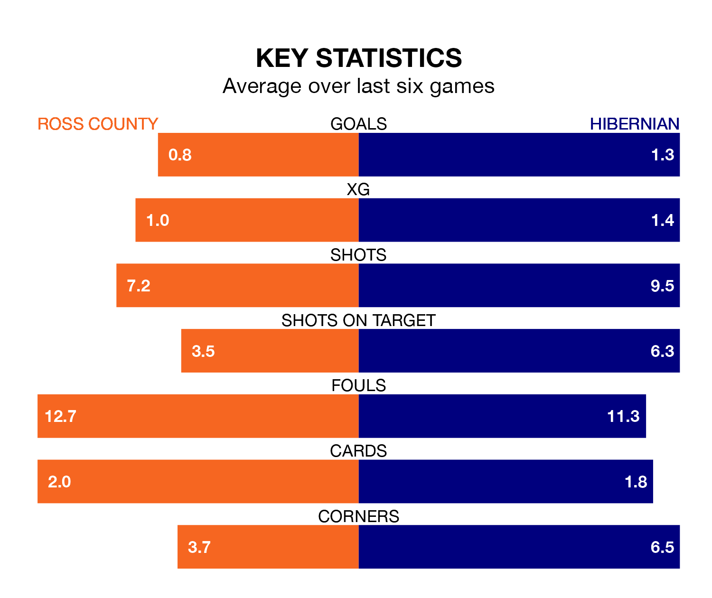

Ross County are on a poor run ahead of hosting Hibernian at the Global Energy Stadium on Wednesday, with just four points collected from their last six games.
The Staggies have picked up one win and one draw in their last six Premiership games, and face a Hibs side whose last six games have brought two wins and two draws.
Ross are 11th in the table after 28 games, of which they have won five and drawn eight, earning 23 points.
Hibernian are five places ahead of County in sixth, with eight wins and 10 draws putting them on 34 points.
In the last 10 years, Ross and Hibernian have played each other on 21 occasions. Ross won five of them, Hibernian 10, and they drew six times.
On average, the Staggies scored 0.9 goals and Hibs 1.4 in those matches.
Their last meeting was on March 2, when Hibernian won 2-0 at home.
With 24 goals in 28 games so far this season, the Staggies are the league's third-lowest scorers with 0.9 goals per game. And they are conceding more than average, letting in 48 goals at a rate of 1.7 per game.
Hibs, meanwhile, are average scorers, with 1.3 goals per game. They have conceded 1.5 goals per game.
In Simon Murray, the home side have one of the league's sharpest shooters so far this season. He has notched seven goals in 27 appearances, to sit ninth in the scoring charts.
The visitors' top scorers, with four goals each, are Dylan Vente and Elie Youan.
Ross's last match was on March 2, a 2-0 loss against Hibernian.
Hibernian beat Ross County 2-0 last time out, also on March 2, with Dylan Levitt and Myziane Maolida on the scoresheet.
Wednesday's match will be refereed by Iain Snedden, who has taken charge of two Premiership games so far this season, issuing one red card and booking 10 players. He has not awarded any penalties.
He is yet to oversee a match featuring either Ross or Hibernian this season.
Updated: 09:34 (UTC), 08/03/24